Books I’ve read
- Lee Kuan Yew Graham Allison & Robert D. Blackwill, with Ali Wyne
-
Thank You for Arguing Jay Heinrichs
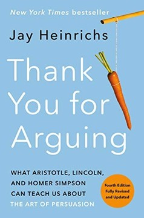
-
How Will You Measure Your Life? Clayton M. Christensen, James Allworth & Karen Dillon
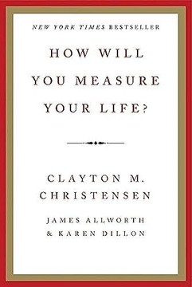
-
Made to Stick Chip Heath & Dan Heath
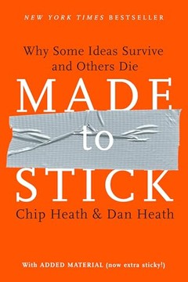
- The Iliad Homer
-
Start with Why Simon Sinek
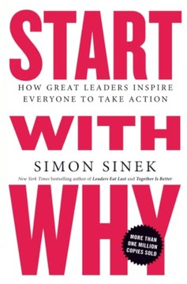
- 7 Powers Hamilton Helmer
- The Story of My Experiments with Truth M. K. Gandhi
- What We Owe the Future William MacAskill
- Surely You’re Joking, Mr. Feynman! Richard P. Feynman
- Unreasonable Hospitality Will Guidara
- 101 Essays That Will Change the Way You Think Brianna Wiest
- The History of Love Nicole Krauss
- The Hard Thing About Hard Things Ben Horowitz
-
Grinding It Out Ray Kroc with Robert Anderson
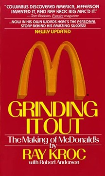
- A Short History of Nearly Everything Bill Bryson
-
When Breath Becomes Air Paul Kalanithi
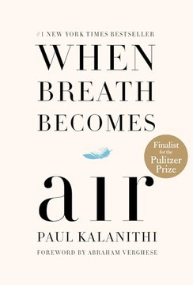
- Can’t Hurt Me David Goggins
-
The Medici Effect Frans Johansson
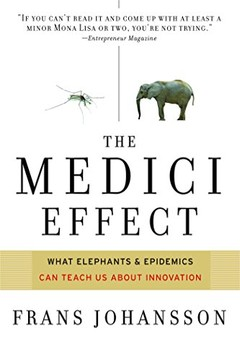
-
Make Time Jake Knapp & John Zeratsky
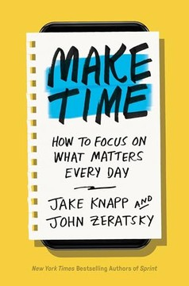
-
Atomic Habits James Clear
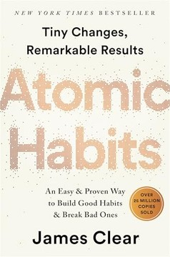
- How to Win Friends and Influence People Dale Carnegie
-
How to Make a Few Billion Dollars Brad Jacobs
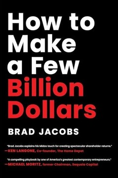
- Let My People Go Surfing Yvon Chouinard
-
Becoming Steve Jobs Brent Schlender & Rick Tetzeli
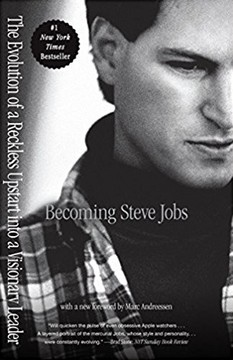
- The Real World of College Wendy Fischman & Howard Gardner
- The Worlds I See Fei-Fei Li
-
Thinking, Fast and Slow Daniel Kahneman
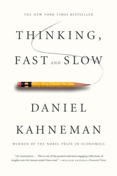
- The Infinite Machine Camila Russo
- Grit Angela Duckworth
-
Zero to One Peter Thiel with Blake Masters
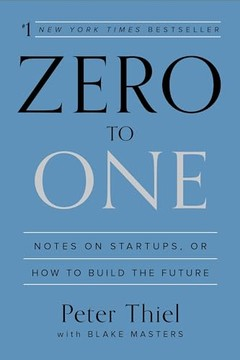
- Born of This Land Chung Ju-yung
-
No Rules Rules Reed Hastings & Erin Meyer
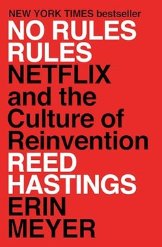
- Poor Charlie’s Almanack Charles T. Munger
-
The Infinite Game Simon Sinek
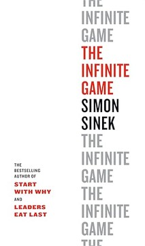
- A Culture of Growth Joel Mokyr
-
Algorithms to Live By Brian Christian & Tom Griffiths
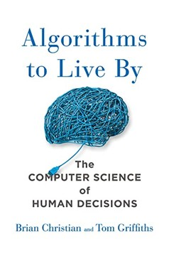
Cover art © the respective publishers.